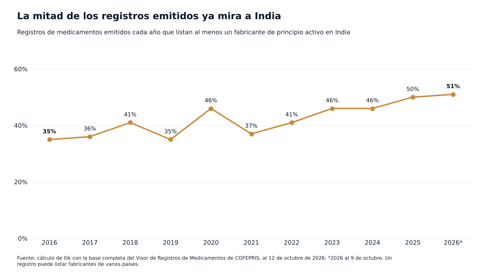
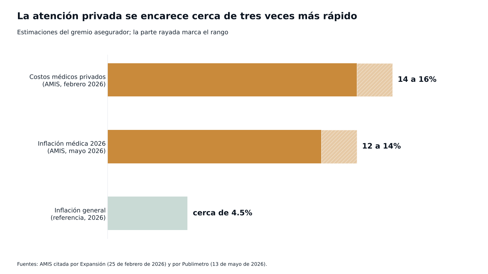

Observatorio / Medicamentos y COFEPRIS
Medicamentos y COFEPRISEl ahorro que nadie ve
Entre 2016 y 2025, la parte de los registros de medicamentos con un fabricante de principio activo en India pasó de poco más de un tercio a la mitad. Ni las primas, ni la inflación médica, ni la cuenta del hospital parecen haberlo notado. Seguimos el rastro de esa diferencia.
La mitad de los registros sanitarios de medicamentos que se emitieron en México en 2025 lista al menos un fabricante de principio activo en India. En 2016 era poco más de un tercio.1 En menos de diez años, la materia prima de buena parte de los medicamentos nuevos se movió hacia orígenes en teoría más baratos.

En esos mismos años, las aseguradoras han repetido otro número: la inflación médica privada en México va a doble dígito.234 Los dos datos rara vez aparecen juntos. Si el insumo se abarató, ¿a dónde fue el ahorro?
No encontramos a nadie que lo haya medido. La pregunta, sin embargo, tiene destinatario. En el Congreso hay una iniciativa que obligaría a los hospitales privados a publicar sus tarifas,5 y las aseguradoras ya han denunciado antes abusos en el cobro de medicamentos e instrumental.6 Si la iniciativa prospera, quien dirige las finanzas de un hospital tendrá que explicar su precio. Para hacerlo, conviene saber primero dónde se quedó la diferencia. Seguimos el rastro en tres paradas.
En la farmacia el ahorro se ve; en la cuenta del hospital, no
En la farmacia, el ahorro se nota: un genérico cuesta menos que la marca, a veces mucho menos.7
El efecto sobre el mercado, en cambio, ha sido tímido. La COFECE encontró en 2017 que, dos años después de llegar, el primer genérico costaba en promedio solo 28% menos que el original. En la Unión Europea la baja rondaba 40%.8
Y el bolsillo sigue cargando. Según la ENIGH 2024, los hogares gastaron en promedio 1,605 pesos por trimestre en atención hospitalaria, servicios médicos, seguros y medicamentos sin receta, 7.9% más que en 2022.9 El CIEP calcula que los medicamentos son 38% del gasto de bolsillo en salud y que más de 857,000 hogares tuvieron gasto catastrófico o empobrecedor en 2024.10
El paciente hospitalizado no elige marca ni ve el precio de compra: paga lo que el hospital factura. No encontramos evidencia de que el cambio de origen haya llegado a esa cuenta.
La aseguradora paga lo facturado y no dice cuánto es medicamento
En febrero de 2026, la Asociación Mexicana de Instituciones de Seguros (AMIS) estimó la inflación médica privada entre 14 y 16% anual.2 En mayo, su directora general, Norma Alicia Rosas, calculó que en 2026 quedaría entre 12 y 14%, con una inflación general cercana a 4.5%.3

En 2024, el ramo de gastos médicos cobró 158 mil millones de pesos en primas y pagó 117 mil millones en siniestros. Son cifras de una columna de El Financiero que no cita su fuente; la columnista concluye que el resultado técnico fue negativo y que la utilidad salió sobre todo del rendimiento de las reservas.11
Falta la pieza clave. No encontramos que la AMIS ni la Comisión Nacional de Seguros y Fianzas publiquen qué parte del siniestro corresponde a medicamentos. Sin ese dato, lo razonable es suponer que la aseguradora paga lo facturado, costara lo que costara el insumo.
Ahí entra la política. La iniciativa de transparencia de tarifas, en su versión de septiembre, fijaba como meta que la inflación médica no pase de 8% anual. El diputado que la impulsa habló de alzas de primas de hasta 80%.5 Al cierre de esta edición no era ley; la Comisión de Hacienda la dejó para después del paquete económico.12
El margen del hospital, una cifra que no encontramos
En septiembre de 2021, un informe de Profeco, Condusef y la CNSF reportó alzas de 15 a 20% en servicios de hospitales privados, frente a una inflación de 2.83% en 2020, según el mismo informe. Las aseguradoras denunciaron abusos en el cobro de medicamentos e instrumental.6
Desde entonces no encontramos ninguna medición pública, oficial o académica, del margen promedio sobre medicamentos en hospitales privados mexicanos.
Los hospitales cuentan otra historia. En julio de 2026, el director de un grupo hospitalario del norte del país escribió que, según la consultora WTW, la inflación médica cerró 2025 en 14.9%. Mencionó entre las causas la escasez de componentes farmacéuticos y pidió regular a los intermediarios.13 Ahí asoma un eslabón que casi nadie mira, el distribuidor, que también podría quedarse con parte de la diferencia.
¿Y las agrupaciones de hospitales? No encontramos ninguna postura pública del Consorcio Mexicano de Hospitales ni de la Asociación Nacional de Hospitales Privados sobre precios de medicamentos o desabasto entre 2020 y 2026.
Una hipótesis que se comprueba con datos de compra
Esto es lo que creemos que pasa, y lo decimos como hipótesis: si el hospital compra más barato y sigue facturando igual, el ahorro se vuelve margen y no llega ni a la aseguradora ni al paciente.
Los indicios a favor son indirectos: las quejas de 2021, una inflación médica de doble dígito justo cuando los registros se movieron hacia India (aunque un registro no es un producto vendido) y genéricos que en México bajan los precios menos que en Europa.
Y hay razones serias para dudar. La presión de precios documentada ocurre en la compra pública;14 no sabemos si el hospital privado de verdad compra más barato. Parte del ahorro puede quedarse antes, en el laboratorio o en el distribuidor. Y otros costos del hospital, que también suben, pueden comerse lo que gane en medicamentos.
Comprobarlo es casi aburrido: poner lado a lado, medicamento por medicamento y mes por mes, lo que el hospital pagó y lo que facturó, separado por origen del principio activo. Si la brecha crece cuando baja el costo de compra, la hipótesis se sostiene. Si el precio facturado sigue al de compra, se cae. Alcanza con los registros de compra y facturación del propio hospital, sin un solo dato de pacientes.
El ahorro es difícil de ubicar; el riesgo de abasto, no
Según la USP, India produce 52% de los principios activos esenciales para tabletas y cápsulas que se usan en Estados Unidos,15 y China es la única fuente de 41% de los materiales de partida clave que esa organización analizó.16 Son cifras de Estados Unidos, pero el mecanismo aplica igual. Si una planta se detiene, el laboratorio puede buscar otro proveedor. El hospital tiene menos salidas: en el peor caso, reprograma una cirugía.
En calidad, lo documentado en México es la falsificación;17 no encontramos retiros ligados a genéricos importados con registro. Lo que sí cambió es la revisión: desde 2019 se aceptan como equivalentes productos precalificados por la OMS18 y desde 2025 hay una vía abreviada.19 Es menos revisión local, aunque no un daño demostrado.
Cuatro versiones y ningún dato
A las aseguradoras les conviene que la inflación se ubique en el hospital, porque eso justifica primas más altas y regulación. A los hospitales, que se ubique en la cadena: tipo de cambio, escasez, intermediarios. A la industria establecida, que lo importado parezca desleal: refuerza su petición de preferencia en las compras públicas.20 Y al gobierno, suponemos, le basta con que el abasto público parezca resuelto.
No encontramos que ninguno publique el dato que cerraría la discusión.
Si se aprueba la transparencia de tarifas, cada hospital tendrá que defender su precio con sus propios números. Quien sepa cuánto paga de verdad, por molécula y por origen, llegará mejor parado a esa conversación.
Mientras tanto, el insumo ya cambió de origen y la inflación médica sigue en doble dígito. Si en medio quedó una diferencia, todavía no aparece en ninguna cifra pública que hayamos encontrado.
Lo que no se mide, se paga de más.
Nota metodológica
Los datos de origen salen de la base completa del Visor de Registros de Medicamentos de COFEPRIS, consultada al 12 de octubre de 2026. El indicador es la proporción de registros sanitarios nuevos emitidos cada año que listan al menos un fabricante de principio activo con domicilio en India; un registro puede listar varios fabricantes, así que el indicador no es exclusivo. Un registro es una autorización para comercializar, no un producto vendido: la serie describe hacia dónde se movió la oferta autorizada, no el volumen que compran los hospitales. Las cifras del ramo de seguros, de la ENIGH, del CIEP y de la COFECE provienen de notas de prensa y columnas que resumen esas fuentes, no de los documentos originales; las de primas y siniestros de 2024 vienen de una columna que no cita su fuente. Las ausencias (mediciones del margen hospitalario, desglose de siniestros por medicamento, posturas de las agrupaciones de hospitales, retiros de genéricos importados) significan que no encontramos esa información en fuentes públicas, no que no exista. Ilik analiza únicamente datos de compra, consumo e inventario de hospitales, nunca datos de pacientes, y esta pieza no usa información de ningún cliente.
Fuentes
- COFEPRIS. Visor de Registros de Medicamentos, base completa al 12 de octubre de 2026. Ver en registros.cofepris.gob.mx ↩
- Expansión. AMIS propone reforma a seguros de gastos médicos, 25 de febrero de 2026. Ver en expansion.mx ↩
- Publimetro. Seguros médicos explotan: hospitales y cirugías serán 14% más caros, 13 de mayo de 2026. Ver en www.publimetro.com.mx ↩
- Vanguardia. Busca AMIS frenar inflación a seguros tras alza de 15% en salud médica en México, 15 de mayo de 2026. Ver en vanguardia.com.mx ↩
- Expansión. Diputados van contra los aumentos de hasta 80% en seguros de gastos médicos, 4 de septiembre de 2026. Ver en expansion.mx ↩
- La Razón. Profeco: hospitales privados suben precios de servicios 15 a 20%, 30 de septiembre de 2021. Ver en www.razon.com.mx ↩
- El Imparcial. Expertos en salud explican por qué los medicamentos genéricos tienen la misma efectividad que los de patente, 24 de julio de 2026. Ver en www.elimparcial.com ↩
- COFECE, estudio de competencia en los mercados de medicamentos con patentes vencidas, 2017, reproducido por Salud y Fármacos, noviembre de 2017. Ver en www.saludyfarmacos.org ↩
- Crónica. Aumenta gasto de bolsillo en población en 2024; persiste carencia en salud: ENIGH, 31 de julio de 2025. Ver en www.cronica.com.mx ↩
- Expansión Política. Hogares en pobreza por gastos médicos de bolsillo (datos del CIEP), 8 de agosto de 2025. Ver en politica.expansion.mx ↩
- El Financiero. Jeanette Leyva, Seguros más caros, ¿a quién culpar? columna, 26 de febrero de 2026. Ver en www.elfinanciero.com.mx ↩
- El CEO. Reforma a seguros entra a negociación con Hacienda por cambios al ISR, 18 de septiembre de 2026. Ver en elceo.com ↩
- El Financiero. Colaborador invitado, La sostenibilidad de la medicina privada en México, al punto de quiebre, 8 de julio de 2026. Ver en www.elfinanciero.com.mx ↩
- La Silla Rota. Farmacéuticas mexicanas en desventaja por subsidios extranjeros, alerta AMELAF, 29 de mayo de 2025. Ver en lasillarota.com ↩
- USP Quality Matters. India leads essential API manufacturing while China gains ground, 23 de marzo de 2026. Ver en qualitymatters.usp.org ↩
- USP Quality Matters. Concentrated origins, widespread risk: new USP insights on key starting materials, octubre de 2025. Ver en qualitymatters.usp.org ↩
- Salud y Fármacos. Boletín Fármacos, alerta sanitaria de COFEPRIS por falsificación, noviembre de 2025. Ver en www.saludyfarmacos.org ↩
- Eje Central. Alertan por flexibilización en medicamentos, 24 de mayo de 2019. Ver en www.ejecentral.com.mx ↩
- Consultor Salud. Vía abreviada de registro sanitario publicada en el DOF el 18 de julio de 2025, julio de 2025. Ver en consultorsalud.com.mx ↩
- Salud y Fármacos. Propuesta de AMELAF de preferencia en compras públicas, agosto de 2025. Ver en www.saludyfarmacos.org ↩

Fundador de Ilik. Estadístico de formación, con más de ocho años al frente de la inteligencia comercial del canal hospitalario privado en la industria farmacéutica.